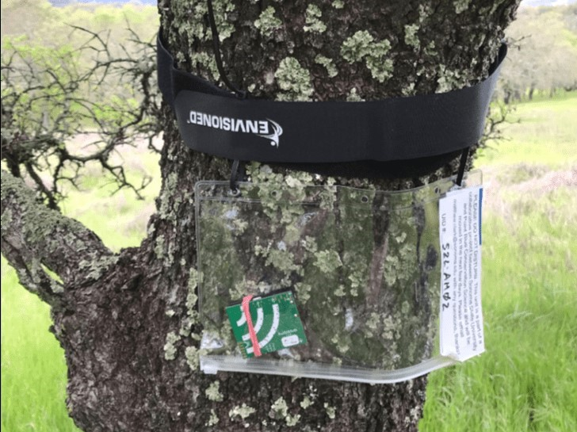

AudioMoth

Soundscape ecology has recently benefited from the development of low-cost, automated recording devices for recording sounds over long periods. Soundscapes to Landscapes uses the inexpensive AudioMoth recorder for recording soundscapes.